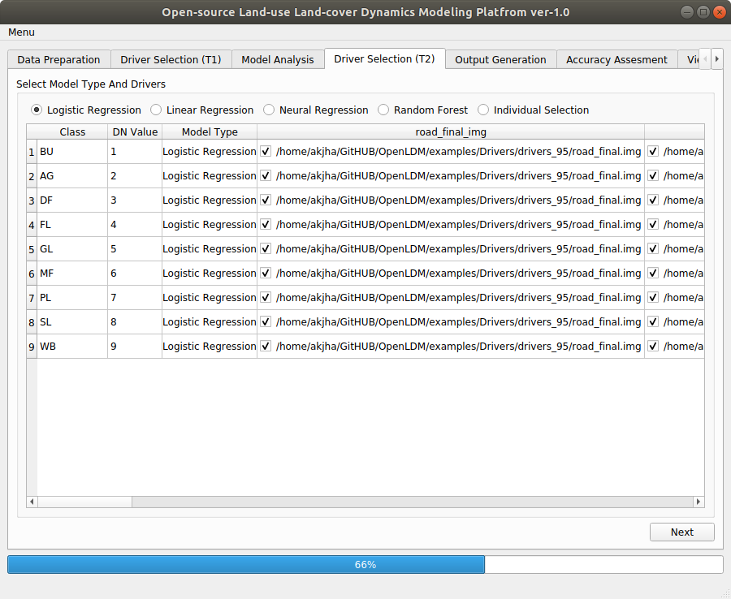

After Clicking on  in Model Analysis tab, we will get the following screen.Here we can put the drivers available for the year T1 (in this case 1995).To provide the drivers we will click on the column with heading of driver which is temporal nature.We have three drivers which are temporal in nature. These are distanceToStream, distnaceToBuiltup, distanceToRoad. We will click on the column corresponding to these drivers and will browse to the folder of drivers95 and select the appropriate drivers. After the selection we have the screen similar to the Figure 15.
in Model Analysis tab, we will get the following screen.Here we can put the drivers available for the year T1 (in this case 1995).To provide the drivers we will click on the column with heading of driver which is temporal nature.We have three drivers which are temporal in nature. These are distanceToStream, distnaceToBuiltup, distanceToRoad. We will click on the column corresponding to these drivers and will browse to the folder of drivers95 and select the appropriate drivers. After the selection we have the screen similar to the Figure 15.

(OpenLDM) v1.0 IIRS